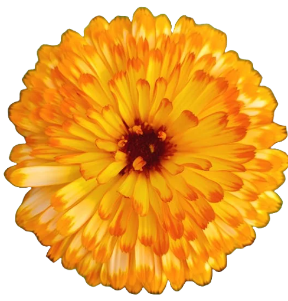

Yahir Ruiz
UX/UI Designer

000-000-0000

yahiruiz.30@gmail.com
About Me
I specialize in mobile design, utilizing atomic design principles for a delightful experience. My passion lies in creating micro-interaction, it’s addicting! From my customer service experience, I love interviewing and testing users to breakdown their goals and pains to ideate potential solutions to their ailments.